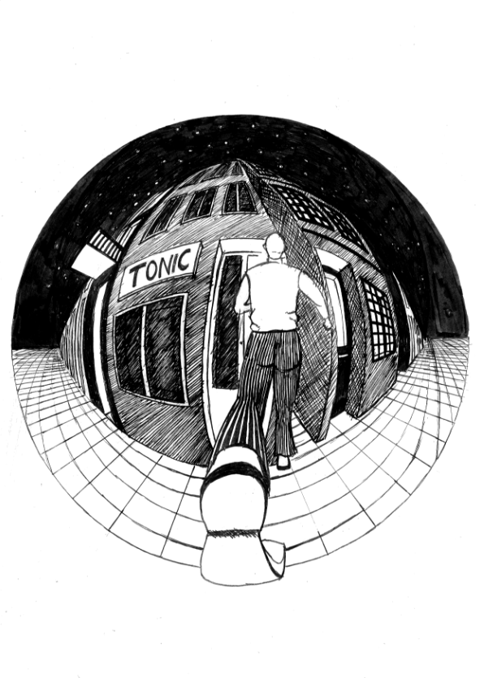
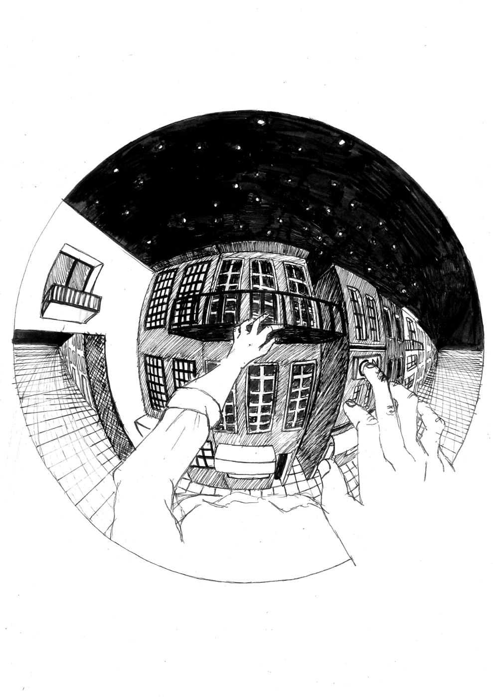
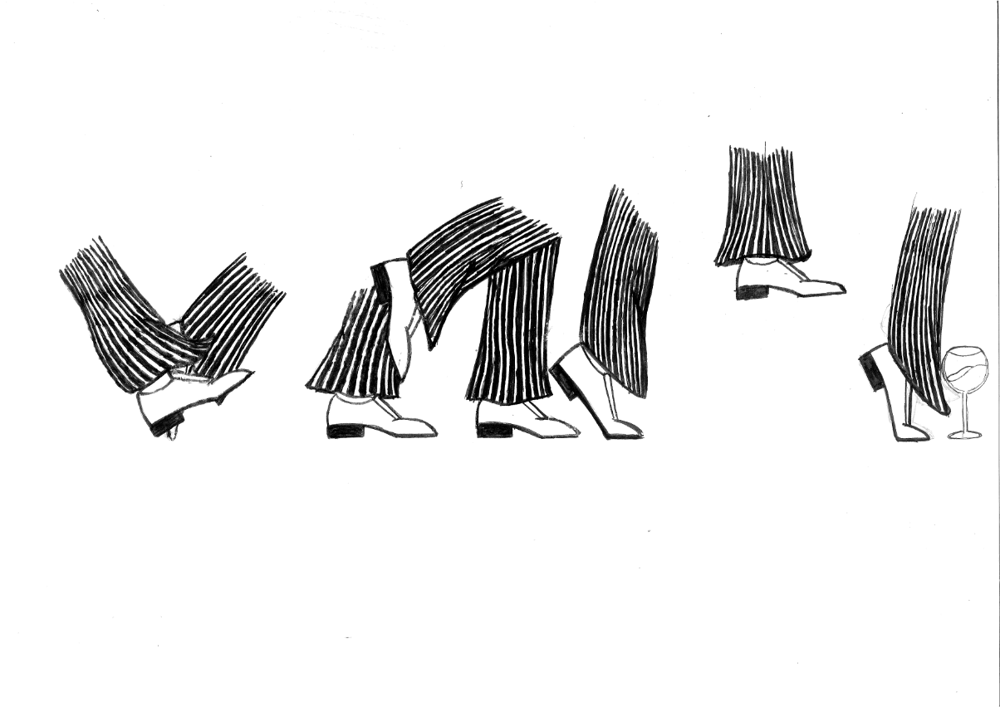
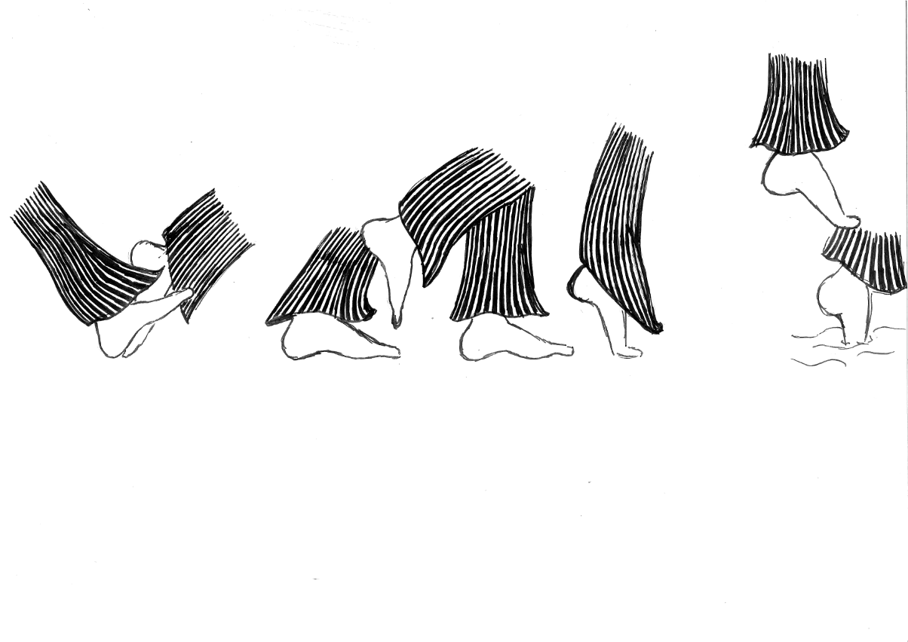

El "Contos do Gin-Tonic" de Mário Henrique-Leiria es un libro de contenido surrealista. El propósito de esta propuesta fue realizar la ilustración de una de las historias, la portada, las solapas, las guardas y un capitular para el libro. Al leer las historias noté una fuerte presencia de deformación de la realidad. Y una buena forma de deformar lo real es la perspectiva curvilínea.
   